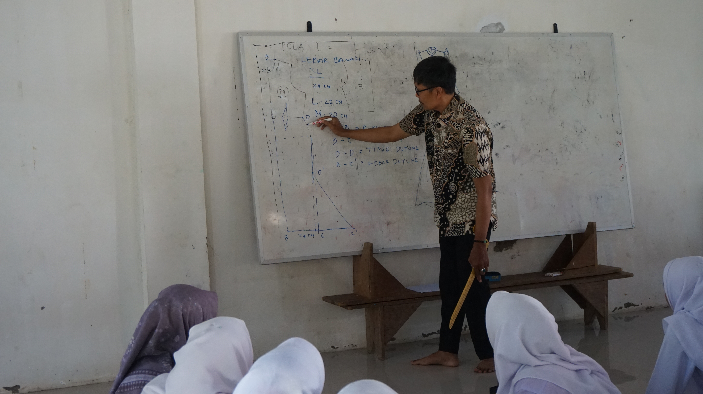
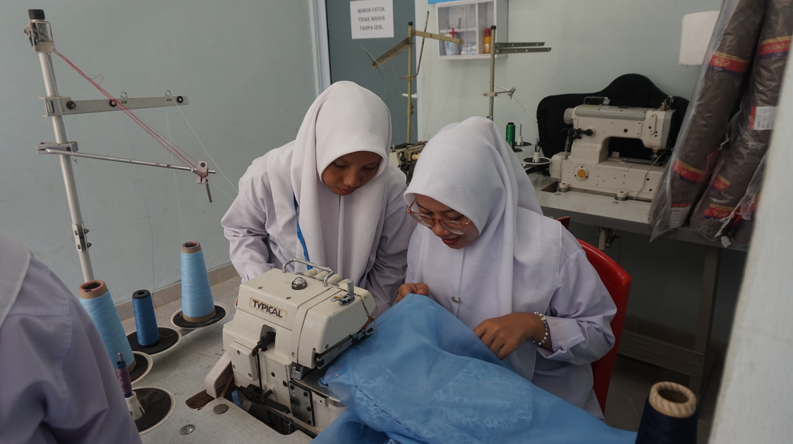
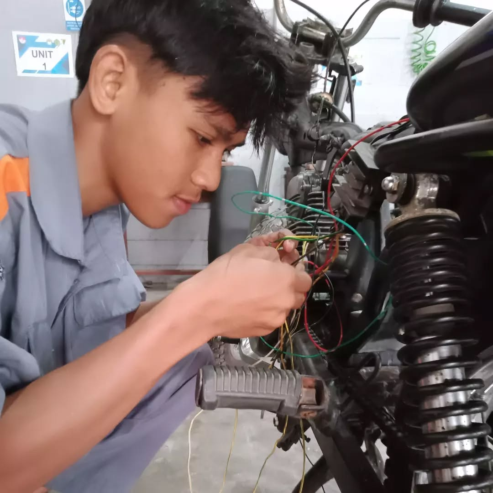
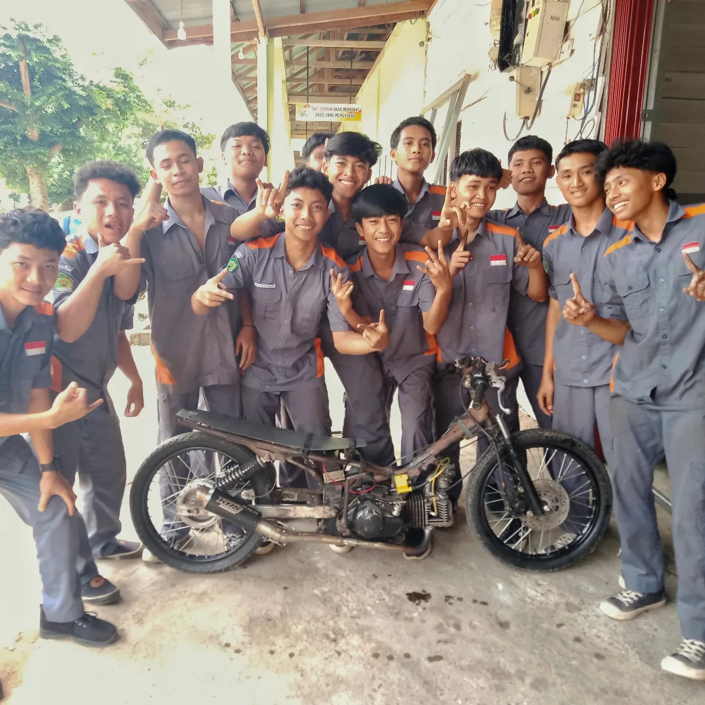
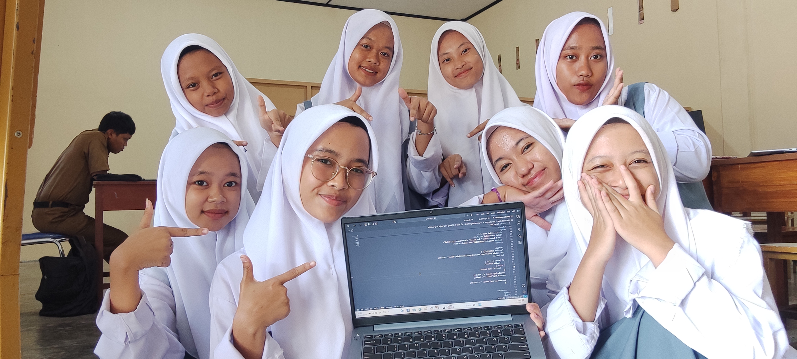
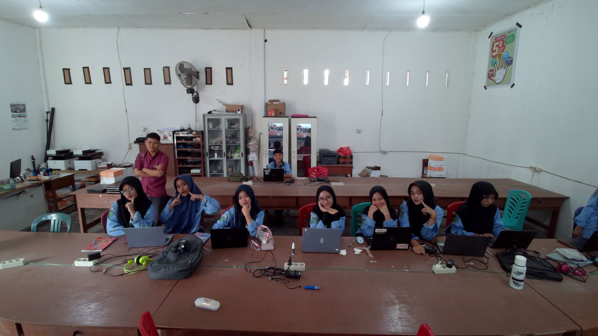
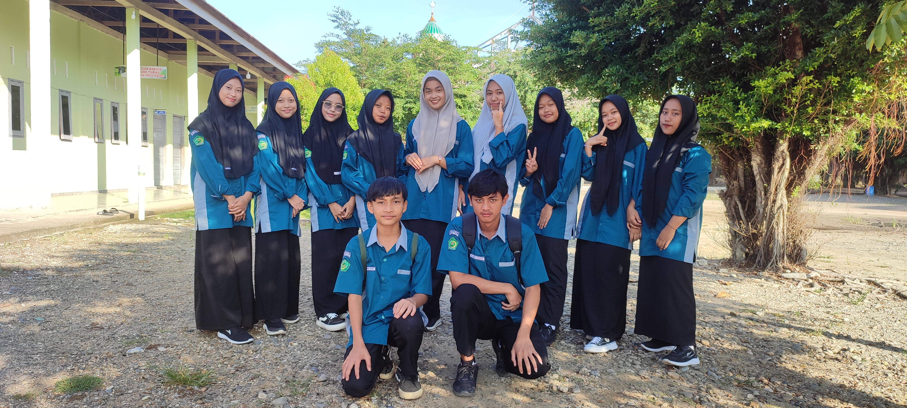

Tata Busana di SMK Riyadhul Ulum (Ujungbatu, Rokan Hulu) merupakan salah satu kompetensi keahlian unggulan yang berfokus pada keterampilan desain, menjahit, dan produksi pakaian. Siswi dibekali kompetensi praktis, seperti penggunaan mesin bordir digital, pembuatan payet, dan teknik jahit, termasuk kegiatan produktif seperti menjahit bendera merah putih.
Berikut adalah poin penting terkait Tata Busana di SMK Riyadhul Ulum:
- Kurikulum Keterampilan: Siswa mempelajari desain busana (fashion drawing), pengetahuan bahan, pembuatan pola, teknik menjahit, menghias busana (embroidery & beading), serta kewirausahaan.
- Fasilitas & Praktek: Siswi aktif menggunakan mesin bordir digital dan membuat hiasan busana/payet.
- Kegiatan: Terlibat aktif dalam kegiatan produktif, seperti menjahit bendera merah putih menjelang 17 Agustus.
- Prospek: Lulusan disiapkan untuk menjadi desainer, pattern maker, wirausahawan, atau bekerja di industri garmen/fashion.
Jurusan ini menjadi pilihan tepat bagi yang berminat mengembangkan bakat di dunia model.

Siswa mengikuti pembelajaran praktik pembuatan pola secara aktif dan terarah. Melalui bimbingan guru, siswa belajar memahami teknik pengukuran dan pembuatan pola sebagai dasar keterampilan kejuruan.

Kegiatan pembelajaran praktik menjahit, siswa aktif berlatih dan berdiskusi bersama guru dalam proses pengerjaan busana. Pembelajaran dilakukan secara langsung untuk meningkatkan keterampilan, ketelitian, dan kerja sama.

Siswa melaksanakan praktik menjahit menggunakan mesin industri dengan penuh ketelitian. Kegiatan ini melatih keterampilan teknis, kerja sama, dan ketepatan dalam mengolah bahan busana.

Hasil akhir karya busana siswa yang ditampilkan dalam kegiatan praktik. Busana dirancang dan dibuat oleh siswa sebagai wujud kreativitas, keterampilan, dan penerapan teknik yang telah dipelajari selama proses pembelajaran.
Teknik dan Bisnis Sepeda Motor (TBSM) di SMK Riyadhul Ulum Ujungbatu, Rokan Hulu, fokus pada keterampilan mekanik profesional dan kewirausahaan. Keunggulan utamanya saat ini mencakup perakitan prototype sepeda motor listrik ramah lingkungan berkecepatan 50 km/jam, mencetak siswa menjadi mekanik kompeten, serta berkolaborasi dalam pelatihan servis.
Berikut adalah poin-poin utama program TBSM SMK Riyadhul Ulum:
- Fokus Pendidikan: Menekankan pada keterampilan teknis sepeda motor secara utuh, mulai dari mesin, sasis, kelistrikan, hingga perbaikan sistem injeksi.
- Inovasi: Siswa terlibat dalam proyek inovatif, seperti merakit prototype sepeda motor listrik yang ramah lingkungan.
- Kompetensi Utama: Pelayanan jasa mekanik kendaraan roda dua, perawatan berkala, dan manajemen bengkel.
- Keunggulan: Kurikulum yang diterapkan berorientasi pada kebutuhan industri (misal: mekanik junior) dengan pelatihan intensif.
- Prospek Lulusan: Menjadi teknisi di bengkel resmi/umum, wirausaha otomotif, atau bekerja di industri perakitan motor.
Pendidikan di SMK Riyadhul Ulum mengintegrasikan keahlian teknis dengan nilai-nilai profesional dan religius.

Kegiatan pembelajaran praktik Teknik dan Bisnis Sepeda Motor, siswa melatih keterampilan perawatan dan perbaikan sistem kelistrikan sepeda motor secara langsung. Pembelajaran ini bertujuan membekali siswa dengan kompetensi teknis dan kesiapan kerja.

Kegiatan praktik Teknik dan Bisnis Sepeda Motor, siswa bekerja sama dalam proses perakitan dan modifikasi sepeda motor. Pembelajaran ini menumbuhkan keterampilan teknis, kerja tim, dan kreativitas siswa.
RPL (Rekayasa Perangkat Lunak) SMK adalah jurusan yang mempelajari pengembangan perangkat lunak, mencakup pembuatan, pemeliharaan, manajemen organisasi pengembangan, dan manajemen kualitas aplikasi. Siswa diajarkan coding, algoritma, basis data, serta pengembangan aplikasi berbasis web, desktop, dan mobile.
Berikut adalah poin-poin terkait jurusan RPL di SMK Riyadhul Ulum:
- Fokus Pendidikan: Siswa di jurusan ini mempelajari cara pengembangan perangkat lunak, pemrograman (coding), dan analisis sistem.
- Keunggulan: Produk-produk dari SMK Riyadhul Ulum (termasuk potensi karya RPL) disebutkan dapat dipesan dengan harga terjangkau.
- Fasilitas/Program: Instagram resmi menunjukkan bahwa sekolah ini telah beradaptasi dengan teknologi terbaru, termasuk ke arah kendaraan listrik (ready to electric vehicle), yang mengindikasikan pengembangan teknologi.

Kegiatan pembelajaran Rekayasa Perangkat Lunak, siswa aktif mengembangkan dan mempelajari pemrograman melalui praktik langsung. Pembelajaran ini melatih logika berpikir, kreativitas, serta keterampilan teknologi informasi.

Kegiatan pembelajaran RPL di ruang praktik, siswa mengerjakan tugas pemrograman secara kolaboratif dengan bimbingan guru.

Angkatan pertama Jurusan Rekayasa Perangkat Lunak (RPL) hadir sebagai pionir—membawa semangat belajar, kebersamaan, dan tekad untuk tumbuh di dunia teknologi yang terus berkembang.
Dengan latar keberagaman, kekompakan, dan rasa ingin tahu yang tinggi, angkatan pertama RPL menjadi fondasi lahirnya generasi inovator, problem solver, dan kreator masa depan. Mereka bukan hanya belajar tentang kode dan sistem, tetapi juga tentang kerja sama, tanggung jawab, dan mimpi besar.